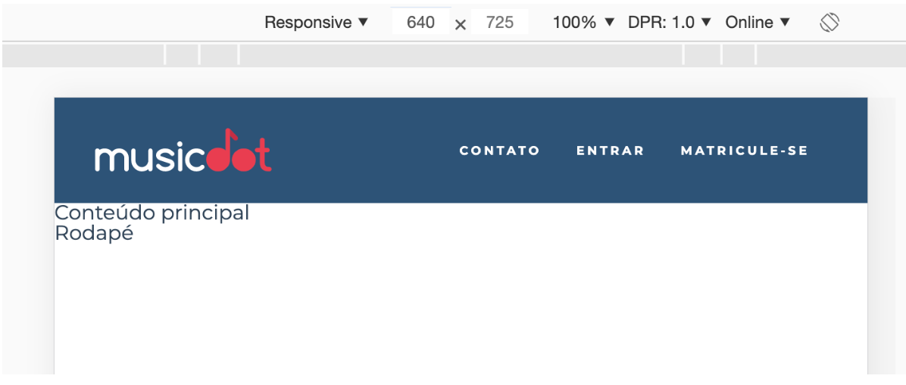

Ainda com a nova ideia de layouts mais declarativos com Flexbox, faremos com que em telas com larguras a partir de 640px o logo e o menu fiquem um do lado do outro com o máximo de espaço possível entre eles. O logo ficaria o máximo possível para a direita e o menu o máximo possível para a esquerda. Dizemos que eles ficarão justificados:
